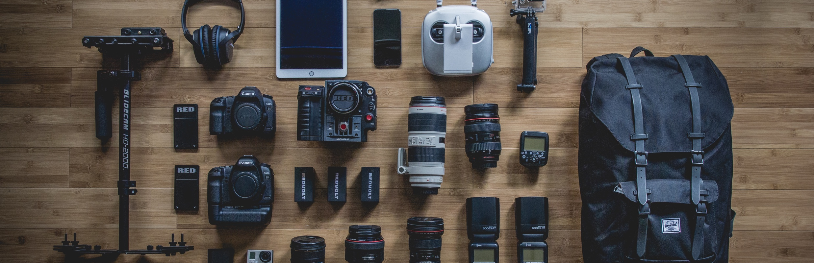

<div id="single-portfolio">
	<div id="portfolio-details" class="container">
		<a class="close-folio-item" href="#"><i class="fa fa-times"></i></a>
		
		<div class="row">
			<div class="col-sm-9">
				<div class="project-info">
					<h3>A Photography Site Clients Want to Use</h3>
					<p>Hannah, a mother of two toddlers and a morgage, came to us because she needed a web presence for her photography business. She needed a gallery, an about page, a packages page, and way to contact her -all on a budget.</p>
					<p>We first set out to define where all the features could live on her site. Working with her, we decided to make her site 3 pages, with the landing page pulling most of the weight (the hero, the about information, the entry way into the gallery, and a contact form). It told a story of what she did, who she was, and how to contact her. The rest of the site was devoted to different packages and their details.</p>
                    <p>Two days shy of two weeks, we presented the developed product. Hannah was thrilled with the results, and she says that people contact her nearly every day because of the site.</p>
				</div>
			</div>
			<div class="col-sm-3">
				<div class="project-details">
					<h3>Project Details</h3>
					<p><span>Client: </span>MJ Photography</p>
					<p><span>Date:</span> 28 Febuary 2017</p>
					<p><span>Tag:</span> UX Research, UI Design, Rapid Development</p>
				</div>  
			</div>
		</div>
	</div>
</div>